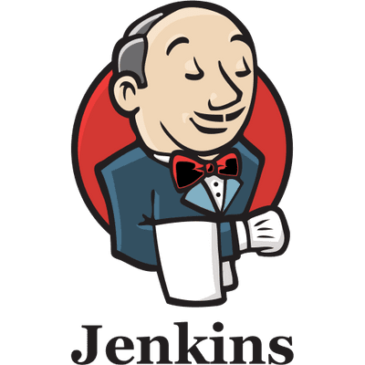
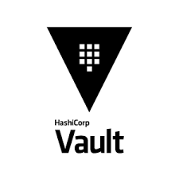
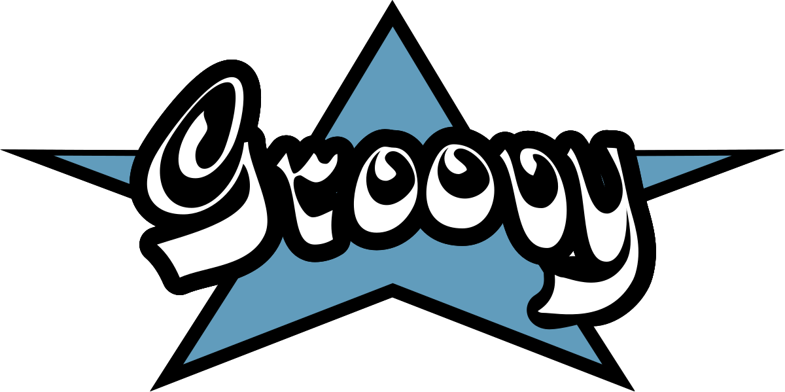
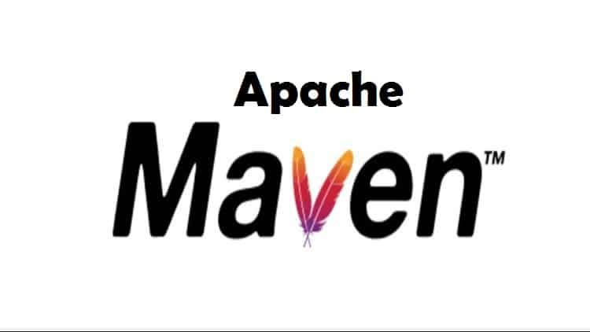
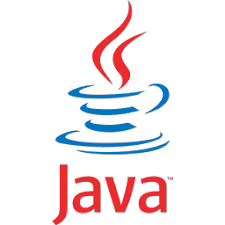
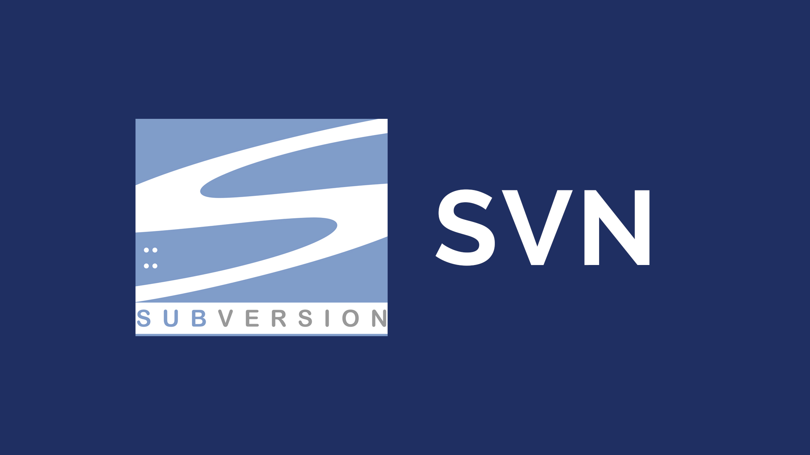

About me
A passionate DevOps and Security enthusiast with a knack for solving problems at the intersection of development and operations. I enjoy building efficient CI/CD pipelines, securing applications from the ground up, and exploring how automation can make systems more reliable and scalable.
Over the years, I’ve worked with diverse technologies across cloud, backend, and infrastructure, and I’m always eager to learn something new. Whether it’s fine-tuning a deployment, integrating security into workflows, or experimenting with new frameworks, I approach every project with curiosity and attention to detail.
When I’m not deep into code or configuration files, you’ll probably find me brainstorming ideas for side projects, learning emerging tech, or sharing insights that can help others in the community.
What i'm doing
-
DevOps
Built and maintained automated CI/CD pipelines, streamlined deployments, and managed Linux-based infrastructure for reliable, scalable delivery.
-

DevSecOps
Integrated security tools into CI/CD workflows, automated vulnerability detection, and enforced secure SDLC practices without slowing delivery.
-
Application Security
Conducted SAST/DAST assessments, developed custom security scripts, and collaborated with teams to remediate vulnerabilities in line with OWASP guidelines.
-

Linux Administration
Automated server monitoring, deployment readiness checks, and configuration management, improving uptime and reducing manual intervention.
Skills


- 


- 

- 
- 
- 
- 